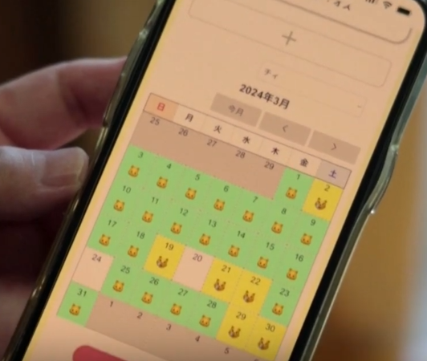
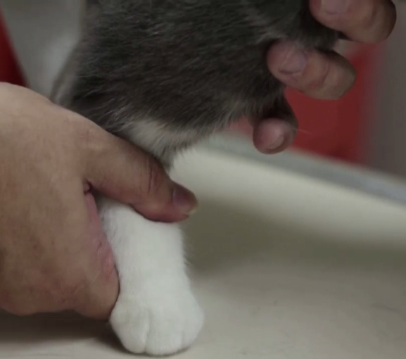

Your cat is in pain (according to the algorithm).

Humans have spent thousands of years trying to understand cats, and the best we’ve done is “sometimes they blink slowly.” So naturally, the next step is outsourcing the entire problem to a neural network. Enter CatsMe — an app that claims it can detect pain in your cat just by analyzing a photo of their face. It looks at the position of the ears, nose, whiskers, and eyelids like it’s doing forensic reconstruction on a creature that eats plastic and screams at doors. Apparently it has around 230,000 users since launch, which means a quarter million people are now taking close-up portraits of their cats like “please… reveal your suffering.”
CatsMe claims 90–95% accuracy, which is both impressive and extremely suspicious because cats are famously uncooperative with reality. There’s a video about the app here: youtube.com/watch?v=U3O8zAbk62M . The app tracks results over time with a calendar view — green means “fine,” yellow means “pain,” which means you can now review your cat’s emotional history like it’s a stock portfolio. But here’s the fun part: the developers themselves admit it needs to be more accurate. So… are we trusting the 95% number, or are we just buying the dream of being slightly less clueless?
Still, even if it’s not perfect, it might be useful in the one way most AI products accidentally are: it makes people pay attention. If it flags pain when a human wouldn’t notice, that could actually get cats into a vet sooner — especially for things like arthritis. Around 70% of elderly cats have arthritis, but only about 2% get treated, because cats don’t limp dramatically… they just quietly downgrade their lifestyle and act like you’re the problem. So yes, it’s ridiculous that we now need an algorithm to interpret whiskers — but if it helps someone catch real pain sooner, this might be one of the rare AI ideas that’s genuinely helpful.